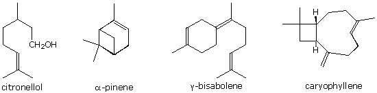
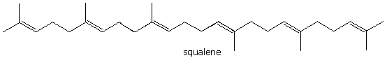

The structural formulas of five terpenes are drawn below. You may select any one of these by clicking the radio button below the structure. In this problem you are asked to draw structural formulas for ozonolysis cleavage product(s) from the selected compound. The ozonolysis may be worked-up by a reductive procedure (zinc dust in aqueous alcohol) or an oxidative procedure ( aqueous hydrogen peroxide). You should select one or the other for the workup, and draw products that correspond to the condition selected in the drawing window on the left. In some cases there is a single major product, and in others there are two or more products. Draw structures for all the different products from a reaction. To draw more than one structure click the New button on the toolbar before starting a new formula. If two or more equivalents of the same product are formed only draw its structure once. Do not draw a structure for carbon dioxide if it is formed. When you are finished, check your answer by pressing the Check Structure button. Stereochemical configurations should be designated by the wedge drawing tool located on the top toolbar. Do not try to indicate the configuration of hydrogen atoms, and do not draw aldehyde hydrogens.

